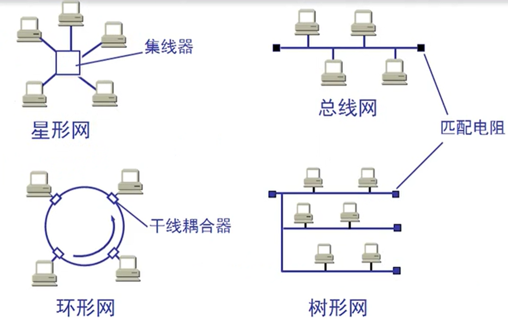
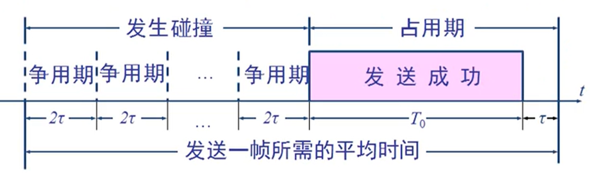

以太网 链接到标题
以太网的两个标准 链接到标题
- DIX Ethernet V2 是世界上第一个局域网产品(以太网)的规约。
- IEEE 的 802.3 标准。
DIX Ethernet V2 标准与 IEEE 的 802.3 标准只有很小的差别，因此可以将 802.3 局域网简称为以太网。 严格说来，以太网应当是指符合 DIX Ethernet V2 标准的局域网
以太网与数据链路层的两个子层 链接到标题
为了使数据链路层能更好地适应多种局域网标准，802 委员会就将局域网的数据链路层拆成两个子层.
- 逻辑链路控制 LLC(Logical Link Control)子层
- 媒体接入控制 MAC(Medium Access Control)子层
与接入到传输媒体有关的内容都放在 MAC 子层，而 LLC 子层则与传输媒体无关，不管采用何种协议的局域网对 LLC 子层来说都是透明的。 由于 TCP/IP 体系经常使用的局域网是 DIX Ethernet V2 而不是 802.3 标准中的几种局域网，因此现在 802 委员会制定的逻辑链路控制子层 LLC(即 802.2 标准)的作用已经不大了. 很多厂商生产的适配器上就仅装有 MAC 协议而没有 LLC 协议。
以太网提供的服务 链接到标题
- 以太网提供的服务是不可靠的交付，即尽最大努力的交付。
- 当接收站收到有差错的数据帧时就丢弃此帧，其他什么也不做。差错的纠正由高层来决定。
- 如果高层发现丢失了一些数据而进行重传，但以太网并不知道这是一个重传的帧，而是当作一个新的数据帧来发送。
星型拓扑 链接到标题

传统以太网最初使用粗同轴电缆，后来演进到使用比较便宜的细同轴电缆，最后发展为使用更便宜和更灵活的双绞线。不同电缆而使用无屏蔽双绞线。每个站需要用两对双绞线，分别用于发送和接收。
这种以太网采用星型拓扑，在星型的中心则增加了一种可靠性非常高的设备，叫集线器。
集线器的一些特点 链接到标题
集线器是使用电子器件来模拟实际电缆线的工作，因此整个系统仍然像一个传统的以太网那样运行。集线器使用了大规模集成电路芯片，因此这样的硬件设备的可靠性已大大提高了。
使用集线器的以太网在逻辑上仍是一个总线网，各工作站使用的还是 CSMA/CD 协议，并共享逻辑上的总线。
集线器很像一个多接口的转发器，工作在物理层。
集线器连以太网定义的标准 链接到标题
10BASE-T 的通信距离稍短，每个站到集线器的距离不超过 100m。
这种 10Mb/s 速率的无屏蔽双绞线星型网的出现，既降低了成本，又提高了可靠性。
10BASE-T 双绞线以太网的出现，是局域网发展史上一个非常重要的里程碑，它为以太网在局域网中的统治地位奠定了牢固的基础。
其他： 100Base-FX 100Base-T 100Base-T4
以太网的信道利用率 链接到标题
以太网的信道被占用的情况 链接到标题

争用期长度为 2γ，即端到端传播时延的两倍。碰撞到碰撞后不发送干扰信号。
帧长为 L(bit)，数据发送速率为 C(b/s)，因而帧的发送时间为 L/C=T0(s).
一个帧从开始发送，经可能发生的碰撞后，将再重传数次，到发送成功且信道转为空闲(即再经过时间 γ 使得信道上无信号在传播)时为止，是发送一帧所需的平均时间。
提高信道利用率 链接到标题
要提高以太网信道利用率，就必须减小 γ 与 t0 之比，以太网中定义了参数 a，是以太网单程端到端时延 γ 与帧的发送时间 t0 之比:
a = γ/t0
a -> 0 表示一发生碰撞就立即可以检测出来，并立即停止发送，因而信道利用率很高。
a 越大，表明争用期所占比例增大，每发生一次碰撞就浪费许多信道资源，使信道利用率明显降低。
信道利用率最大值 链接到标题
对以太网参数的要求 链接到标题
- 当数据率一定时，以太网的连线的长度受到限制否则 γ 的数值会太大
- 以太网的帧长不能太短，否则 t0 的值会太小，使 a 值太大。
信道利用率的最大值 链接到标题
在理想化的情况下，以太网上的各站发送数据都不会产生碰撞(这显然已经不是 CSMA/CD，而是需要使用一种特殊的调度算法)，即总线一旦空闲就有某一个站立即发送数据。
发送一帧占用线路的时间是 t0 + γ，而帧的本身的发送时间是 t0，于是我们可计算理想情况下的极限信道利用率 Smax 为：
Smax = t0/t0 + γ = 1/1+a